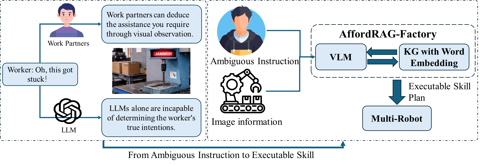
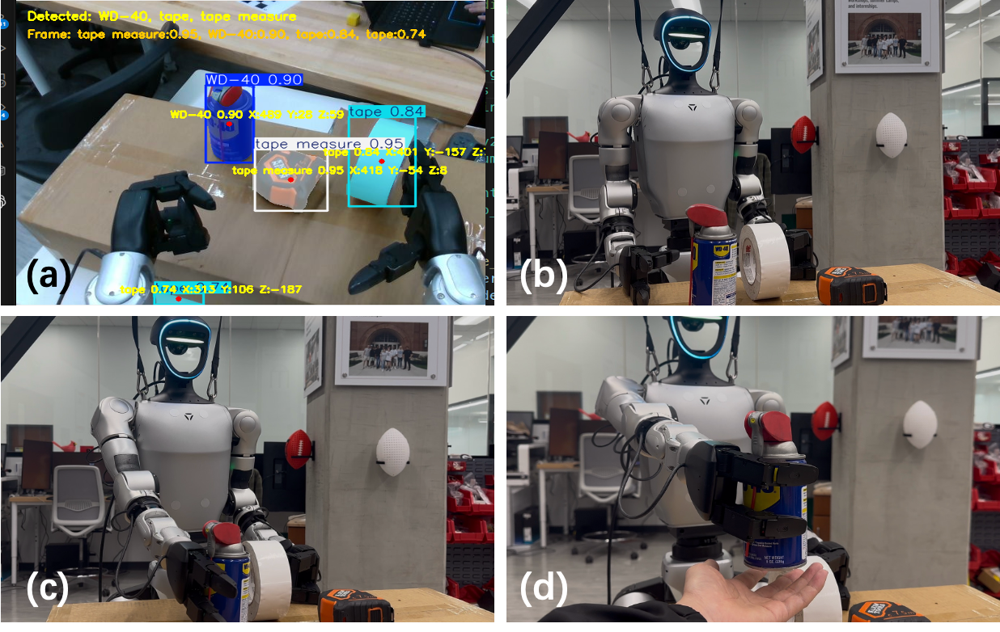
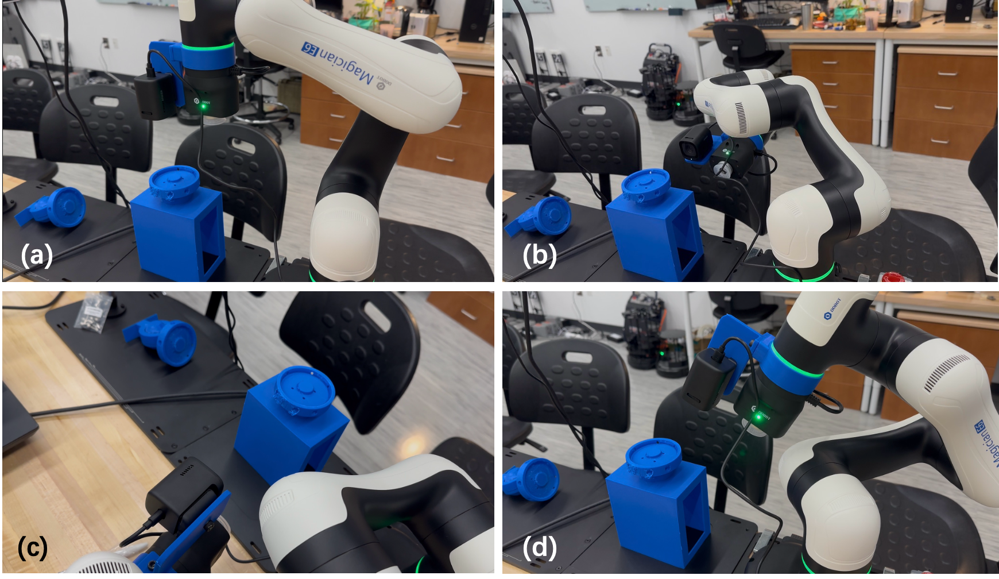
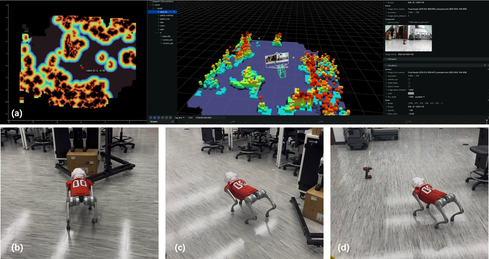

Motivation

Manufacturing workers often express effect-oriented and ambiguous requests. AffordRAG-Factory combines visual understanding and structured knowledge reasoning to infer executable multi-robot actions from such instructions.
Abstract
High-Mix Low-Volume manufacturing frequently requires workers to interact with multiple robotic platforms using natural and often ambiguous expressions. However, such instructions rarely specify tools, actions, parameters, or the most appropriate robot explicitly, which makes direct end-to-end execution unreliable in real industrial environments.
We propose AffordRAG-Factory, a hierarchical embodied multi-robot framework that combines edge-side vision-language models with knowledge-graph-based retrieval and reasoning. The system decomposes decision making into task intention analysis, tool affordance reasoning, action reasoning, and robot allocation, and finally converts the result into executable Skill-Code commands for heterogeneous robots.
The uploaded examples below illustrate the overall framework as well as real deployments on a humanoid robot, a robotic arm, and a quadruped robot platform.
System Framework
.png)
The framework contains four layers: task intention analysis, tool affordance reasoning, action reasoning, and robot allocation, supported by tool, action, and robot knowledge graphs.
Real-World Case Studies

Humanoid Assistance
The humanoid robot interprets an ambiguous maintenance-related request, identifies the relevant objects in the scene, and executes grasping and handover actions accordingly.

Robotic Arm Execution
The robot arm case study demonstrates object-centered manipulation and viewpoint-aware execution in a tabletop manufacturing setup.

Quadruped Navigation
The quadruped robot receives a high-level request, reasons about the target object and navigation objective, and performs mobile task execution in a real environment.
Video Demonstrations
Humanoid demo. Real-world execution of the humanoid platform under the AffordRAG-Factory reasoning pipeline.
Quadruped demo. Real-world navigation and target-oriented behavior on the robot dog platform.
Benchmark Results
Performance on a benchmark of ambiguous manufacturing instructions.
| Method | Accuracy (%) | Avg. Latency (ms) |
|---|---|---|
| SmolVLM-500M | 91.4 | 182 |
| Qwen3-VL-2B | 100.0 | 232 |
| GPT-4o | 100.0 | 1331 |
BibTeX
@inproceedings{meng2026affordragfactory,
title={AffordRAG-Factory: A Hierarchical Edge VLM and Knowledge Graph Framework for Ambiguous Multi-Robot Task Execution in Manufacturing},
author={Meng, Yang and Yang, Xiaoou and Frericks, John B. and Xie, Jiajia and De Austria, Tyler and Singh, Aarti and Morkos, Beshoy},
booktitle={Proceedings of the ASME 2026 International Design Engineering Technical Conferences and Computers and Information in Engineering Conference},
year={2026}
}